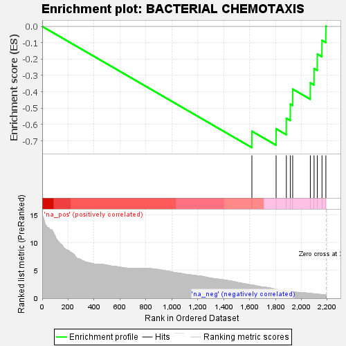
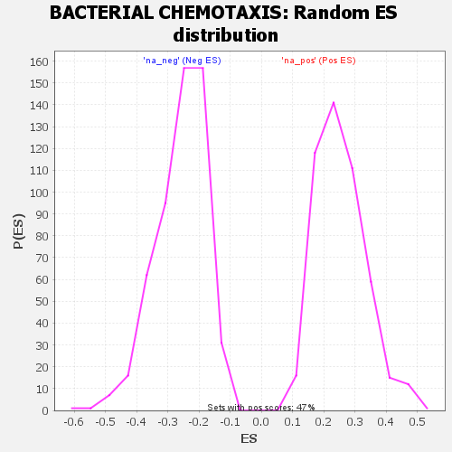

| | | Dataset | GSEA RNK clr Maaslin2 MucosalvsLuminal KO - ProximalColon.rnk |
| Phenotype | NoPhenotypeAvailable |
| Upregulated in class | na_neg |
| GeneSet | BACTERIAL CHEMOTAXIS |
| Enrichment Score (ES) | -0.74118185 |
| Normalized Enrichment Score (NES) | -2.8862998 |
| Nominal p-value | 0.0 |
| FDR q-value | 0.0 |
| FWER p-Value | 0.0 |
Table: GSEA Results Summary

Fig 1: Enrichment plot: BACTERIAL CHEMOTAXIS
Profile of the Running ES Score & Positions of GeneSet Members on the Rank Ordered List

Fig 2: BACTERIAL CHEMOTAXIS: Random ES distribution
Gene set null distribution of ES for BACTERIAL CHEMOTAXIS